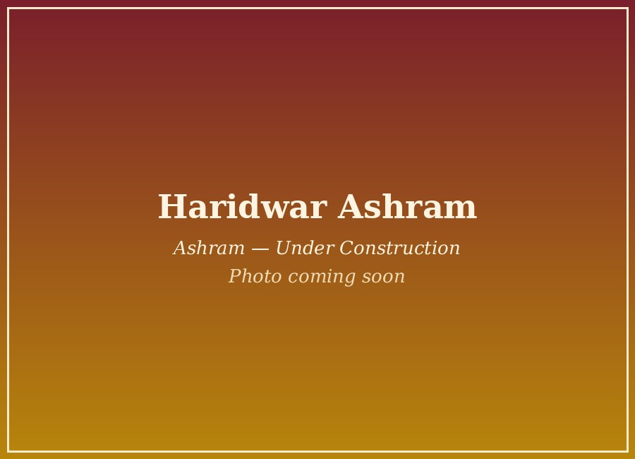
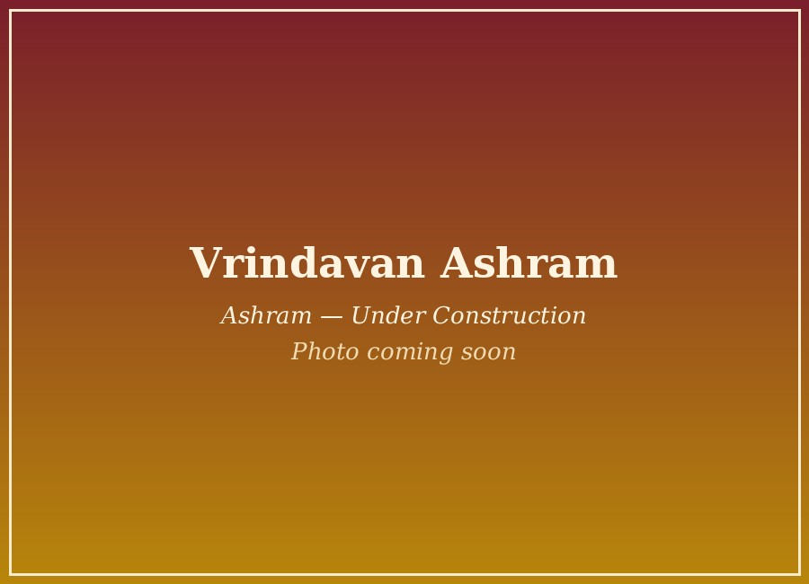
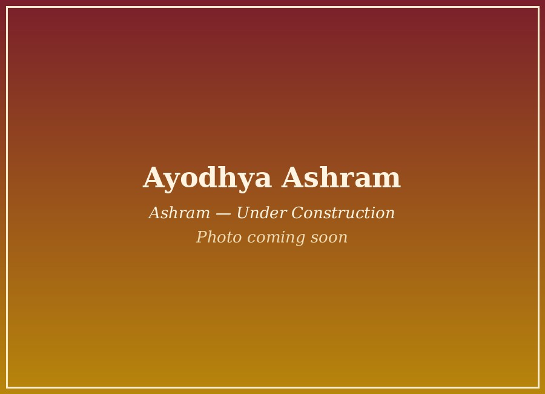

Where the ashram community gathers for satsang, seva and darshan.

The main ashram and spiritual home of Nakur Wale Baba Ji — the seat of his samadhi, and where daily aarti and satsang continue every morning and evening. Sant Devi Sudiksha Saraswati Ji leads the ashram's ongoing seva and satsang activities from here.
Daily Aarti & Satsang: 7:00 AM & 7:00 PM
Get Directions
Our centre in the holy city of Haridwar.

A new centre currently under construction in Vrindavan.

A new centre currently under construction in Ayodhya.